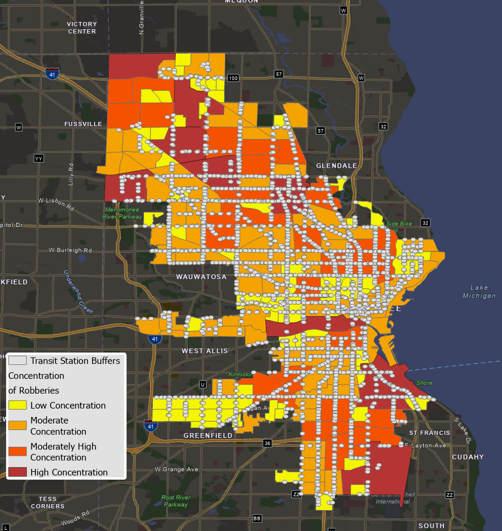

A Spatial Anaylsis of Crime near Transportation Services in Milwaukee, WI
Getting around in Milwaukee
The largest transportation agency in Wisconsin, the Milwaukee County Transit System (MCTS) is the primary transit provider in the city of Milwaukee. With over 4,590 station stops across 60 transit routes, Milwaukee ranks among the most developed and frequented transit agencies in the United states. There are multiple forms
of transportation available to the public of Milwaukee including that of the Bus, Amtrak Train, Ferry, and Streetcar (referred to locals as the "hop"). According to recent estimates, the Milwaukee transit system had a
ridership of 14,356,000 or approximately 50,600 users per weekend (MCTS Annual Report, 2021). Recognizing how mass-transit may act as an attractor or deterrent for criminal behaviors, we examine the concentration of crime near transit stations relative to the dispersion of such events elsewhere in the city.
Crime Patterns in the City

This project has examined the concentration of robbery crimes near transit relative to the dispersion of such events across the city as a whole. In analyzing crimes reported to the Milwaukee police department (2020), we examined 2,080 counts of
robbery occurring between January 2020 amd December 2020. Of these events, 528 (25.4%) occurred within a 400 foot buffer of a transit node. The calculated location quorients for the total robbery crimes within a 400 ft. buffer
resulted in a value of 24.7. This calculated value exceeded the empirical threshold of 2.0, therefore, there is a considerable concentration of robbery crime near transit when compared with other areas of the city. Specifically, robbery crimes are 24.7 times more
concentrated near mass-transit nodes when compared to other land use areas in the city limits of Milwaukee.
Ridership and Crime (Type of Public Transit)
This line graph presents the estimated ridership and reported crimes near major types of public transportation in Milwaukee. This would include the bus
service and the streetcar (referred to as the "hop"). As a comparison metric, this chart also presents the total ridership (for all transportation services) and total robberies within the city limits of Milwaukeee (from January 2020 - December 2020). When comparing the major types of public transportation, the bus system in
Milwaukee experienced a higher frequency of ridership and crime. However, the bus system comprises nearly 85% of all transit stations in the city of Milwaukee. When taking this factor into consideration, the streetcar experienced the highest ridership (per station stop) and highest concentration of robberies relative to
all other types of public transportation in the city.
Neighborhood Anaylsis of Transit and Crime
The above bar chart presents a selection of neighborhoods in Milwaukee that were found to have the highest concentration of transit stations and robbery crimes. These neighborhoods include
Arlington Heights, Brewers Hill, Haymarket, Kilbourn Town, Menomonee Valley, Polonia, and Riverwest. For each of these neighborhoods, the total number of transit stations
and robbery events (occurred within a 400 foot radius of a neighborhood's transit stations) are reported. The total population and average household income (as reported by the
US Census Bureau, 2020) are also provided.
Milwaukee Transit Dashboard
Transportation stops in Milwaukee can be further analyzed using the Transit Dashboard (below). This dashboard, powered by ArcGIS and Microsoft Power BI, presents the bus and
streetcar services within the city limits of Milwaukee. For these services, the name of each station stop and the corresponding robbery events (as reported in 2020) has been
provided.
 The largest transportation agency in Wisconsin, the Milwaukee County Transit System (MCTS) is the primary transit provider in the city of Milwaukee. With over 4,590 station stops across 60 transit routes, Milwaukee ranks among the most developed and frequented transit agencies in the United states. There are multiple forms
of transportation available to the public of Milwaukee including that of the Bus, Amtrak Train, Ferry, and Streetcar (referred to locals as the "hop"). According to recent estimates, the Milwaukee transit system had a
ridership of 14,356,000 or approximately 50,600 users per weekend (MCTS Annual Report, 2021). Recognizing how mass-transit may act as an attractor or deterrent for criminal behaviors, we examine the concentration of crime near transit stations relative to the dispersion of such events elsewhere in the city.
The largest transportation agency in Wisconsin, the Milwaukee County Transit System (MCTS) is the primary transit provider in the city of Milwaukee. With over 4,590 station stops across 60 transit routes, Milwaukee ranks among the most developed and frequented transit agencies in the United states. There are multiple forms
of transportation available to the public of Milwaukee including that of the Bus, Amtrak Train, Ferry, and Streetcar (referred to locals as the "hop"). According to recent estimates, the Milwaukee transit system had a
ridership of 14,356,000 or approximately 50,600 users per weekend (MCTS Annual Report, 2021). Recognizing how mass-transit may act as an attractor or deterrent for criminal behaviors, we examine the concentration of crime near transit stations relative to the dispersion of such events elsewhere in the city.